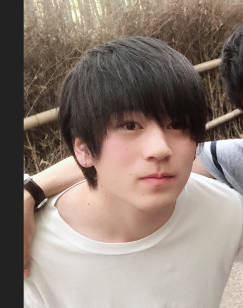
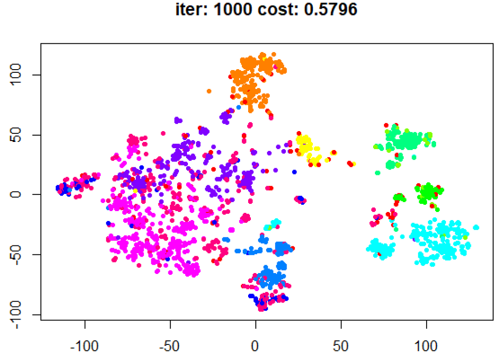
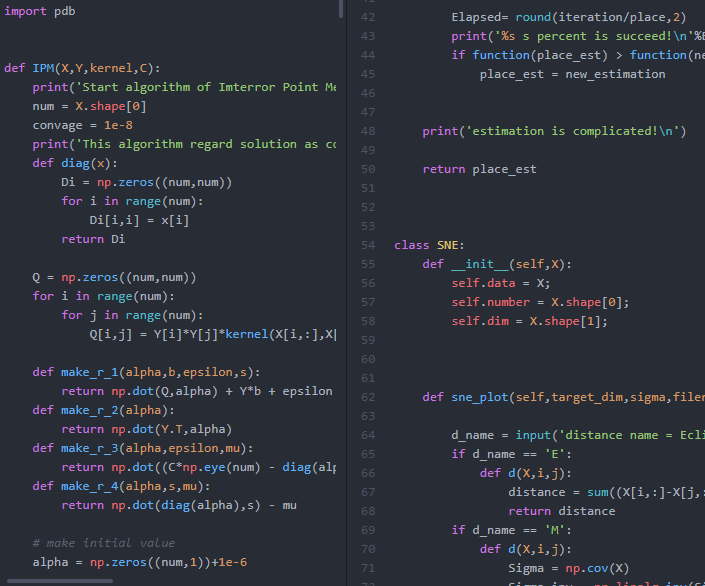
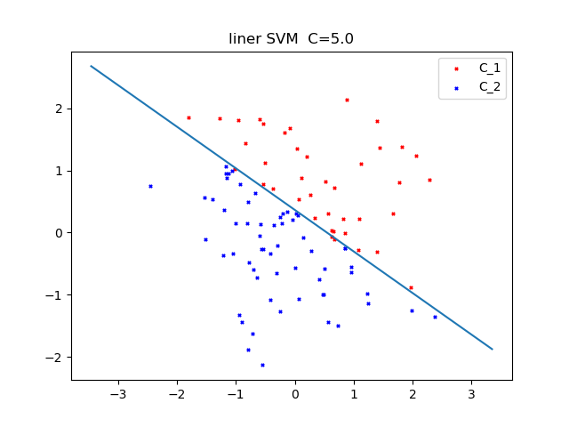
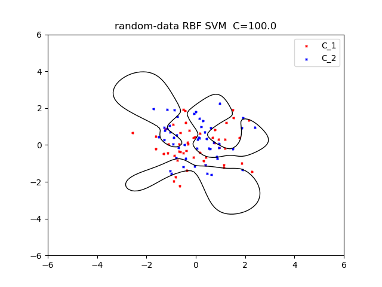
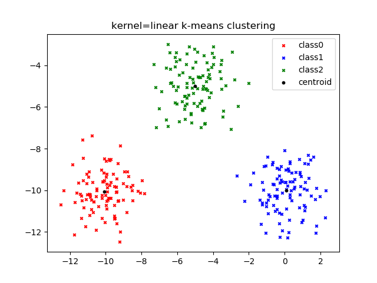
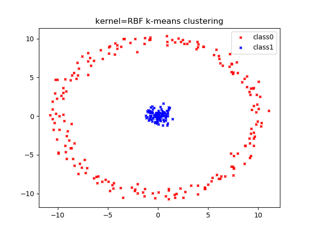

t-SNE
t-SNEを稲のデータに適応したときの画像です。(2000,10000)で構成されたデータを使っています（実際はもっと多いデータを分析します。）。これは僕たちの研究内容の一部です。
現在、立命館大学数理科学科三回生です。大学で数学を学びつつ機械学習の勉強を独学で学んでいます。
数学が小さいころから好きで、大学でも数学を学びたいを思って今の学科に進学しました。
現在、アルバイトとしてデータサイエンスの仕事をしています。
小学校から高校生までサッカー部に所属していました。
趣味はサッカーとラーメンを食べることと小説を読むことです。
下記のProfileでより詳しい説明をしています。

僕たちの研究の名前はLygometryです。意味はまだ知らないことを学んでいくということだそうです。
内容は遺伝子解析です。DNAにはSNPという個体の形質を決定づける箇所があります。形質とは個人の個性のようなもので、例えば人でゆうなら、身長や体重、瞳の色、、、などたくさんあります。
僕たちはこのSNPに注目した遺伝子解析を行っています。より具体的には、稲の遺伝子データを扱います。SNPは基本的に高次元データであり、我々が目に見える二次元や三次元では個体間の距離を目で確かめることはできません。
そこで、僕たちはt-SNEと呼ばれる次元削減のための統計手法を用いています。 t-SNEによって次元を減らし、個体間のSNPの距離を確認します。
t-SNEについてはこちらをまずはご覧ください。
この研究は稲の形質を決定づけるSNPについて、個体間の距離の関係を分析します。例えば、"地域を個体の大きさに関係はあるのか、あるならどの地域が最も大きいのか"、
"形質と地域に何らかの関係性はあるのか？"などといったことについて調べます。
この研究の仲間を紹介します。kiwamizamuraiは遺伝解析を専門に学んでいる学生です。
もし、この研究に興味がおありでしたら、僕かkiwamizamuraiにご連絡ください。

僕の仕事はアルバイトとして、データサイエンスをしています。僕がお世話になっている会社ではベイジアンネットワークや他にもさまざまな機械学習を用いてデータを分析しています。
この仕事を始めたのは2018/04/06です。ですので、まだ始めたがかりになります。
アルバイトでは、この先様々な機械学習を実装していくつもりです。日々現実的な問題をいただいており、実力がついているのが実感できます。
働く前に宿題をもらいました。二週間という期間の中で終わらせる内容でいした。内容は顧客の購入のデータを用いて新しい政策案を出すことでした。この宿題ではMySQLを使わなければいけませんでした。
そこで初めてMySQLに触れることができました。アルバイトではほとんどMySQLを使っています
MySQLは大変便利で、データの前処理や管理に向いているといえます。 これから先全力で、データサイエンスの実務としての経験を蓄えようと思います。
日経新聞に少しだけ名前を出していただきました。データサイエンスの記事です。
こちら

これは僕の興味事の一部ですです。これらを基本的には勉強していいます。
統計学
確率論
測度論
グラフ理論
関数解析
サポートベクターマシーン
ニューラルネットワーク
深層学習
強化学習
ベイジアンネットワーク
Python
MySQL
R
これは今まで実装してきたときの画像です。もし、興味が少しでもありましたら、画像のボタンアイコンのところからブログのページに行ってください。
ブログは日本語ページへ飛べるようにもなっています。
t-SNEを稲のデータに適応したときの画像です。(2000,10000)で構成されたデータを使っています（実際はもっと多いデータを分析します。）。これは僕たちの研究内容の一部です。


これはカーネルSVMの画像です。カーネルSVMは直線で分類できないようなデータも分類することができます。この画像ではカーネルはRBFと呼ばれるものを使っています。


{kind=link}
{kind=link}
{kind=link}
{kind=link}